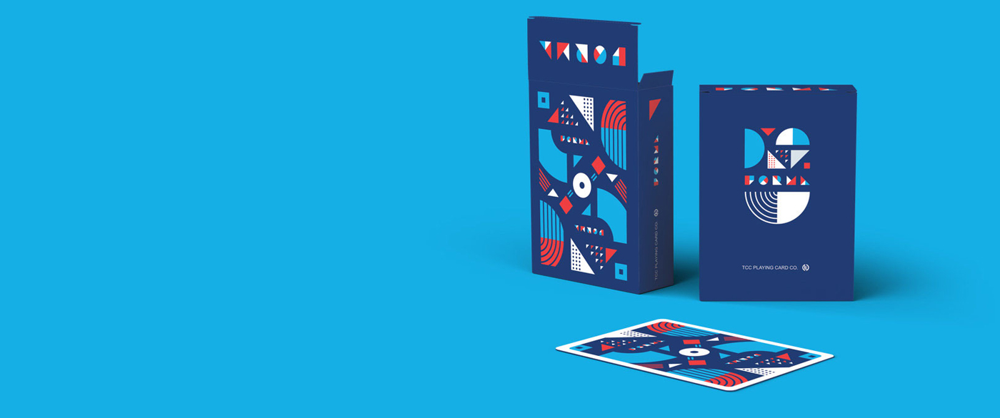

most wanted.

Este es un deck de cartas monocromaticas, inspiradas en ilustraciones basicas con un cierto estilo infantil.

Set de cartas minimalistas inspiradas en formas basicas y lineas rectas y curvas, hechas en un principio a mano y con detalles de lujo.

This is a wider card with supporting text below as a natural lead-in to additional content. This content is a little bit longer.

This is a wider card with supporting text below as a natural lead-in to additional content. This content is a little bit longer.

Este es un deck de cartas monocromaticas, inspiradas en ilustraciones basicas con un cierto estilo infantil.

Set de cartas minimalistas inspiradas en formas basicas y lineas rectas y curvas, hechas en un principio a mano y con detalles de lujo.